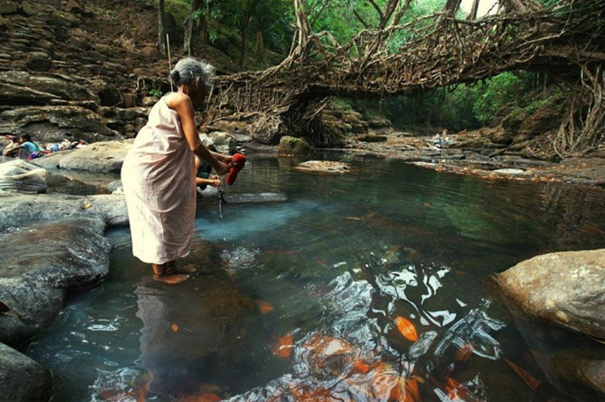
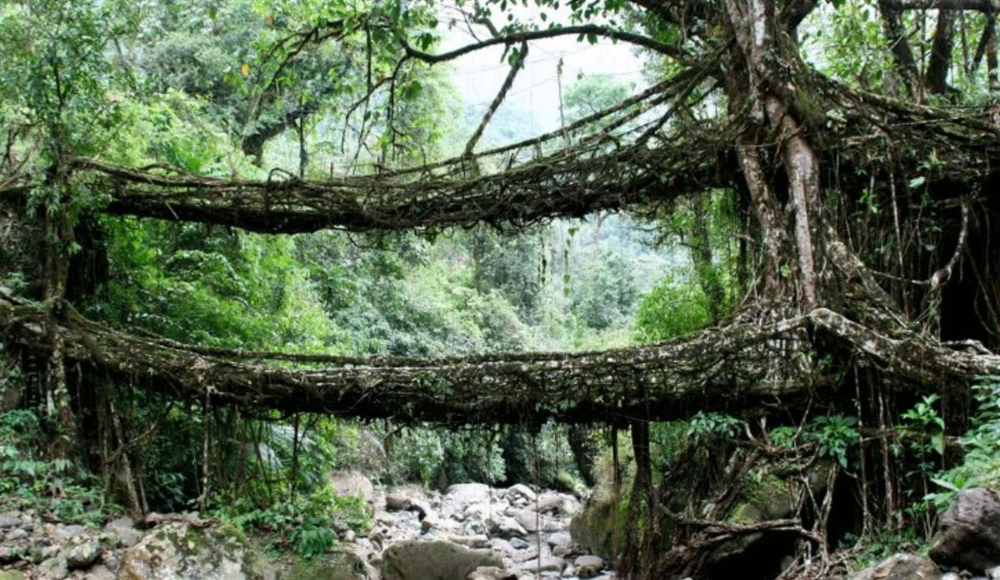
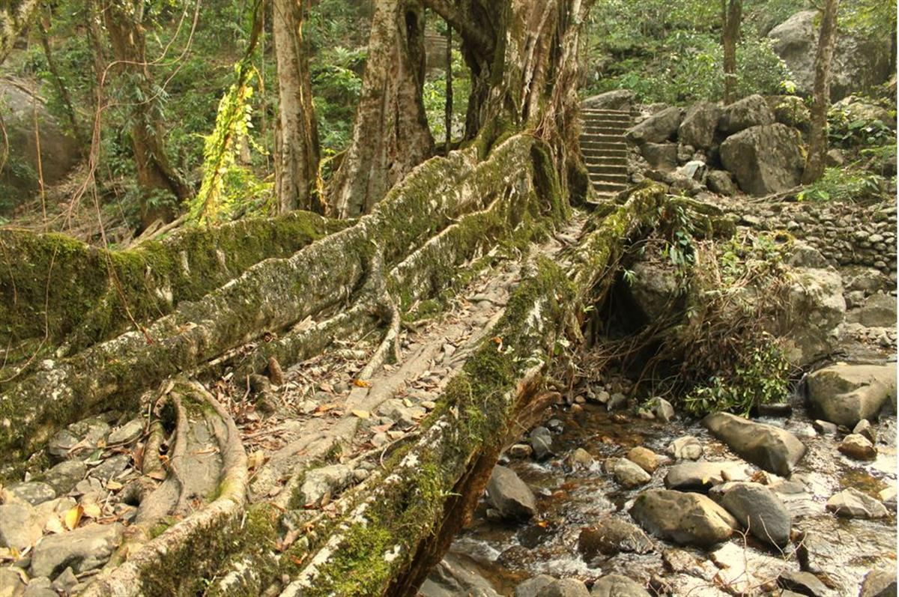
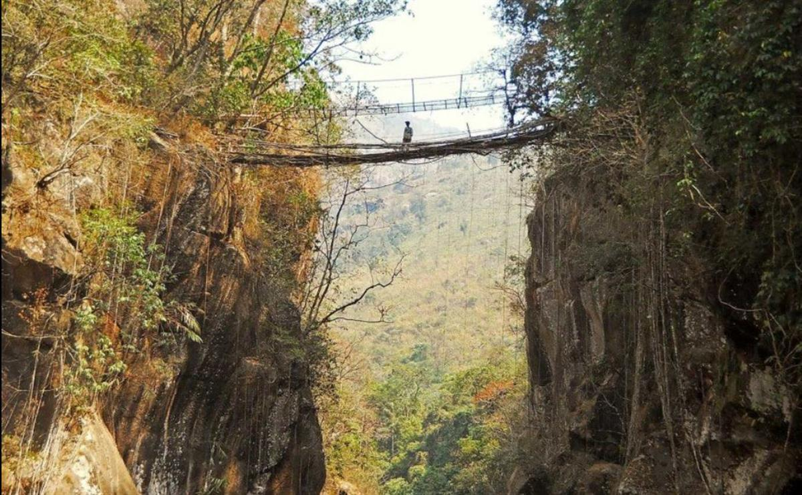
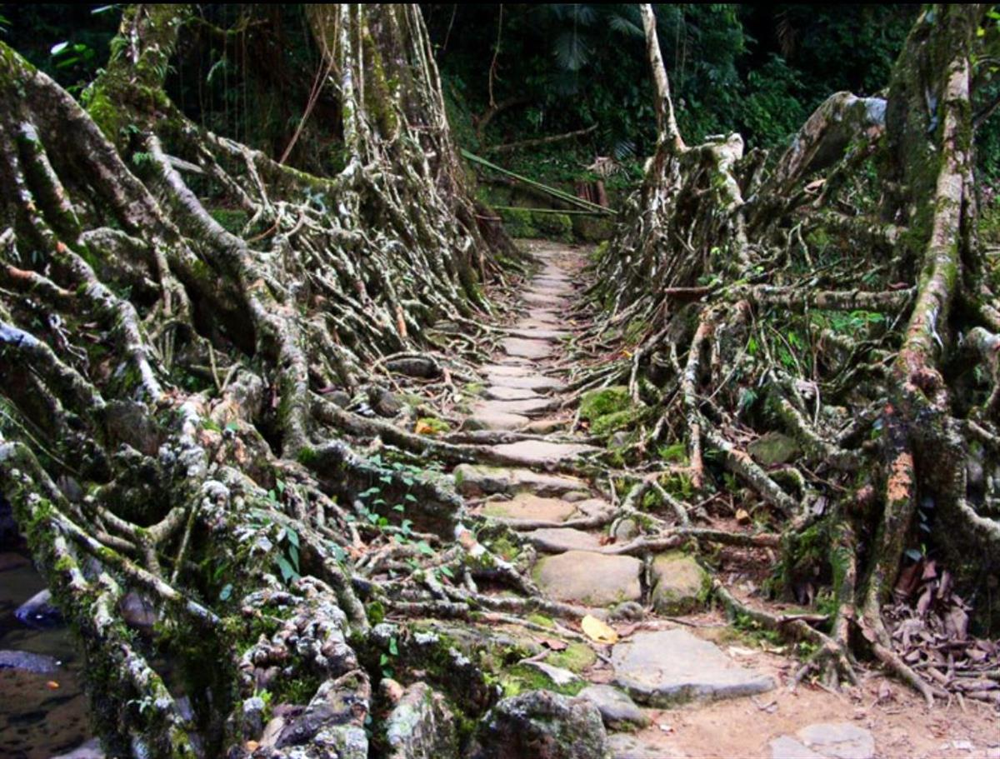

Rozie Apps
Observing patterns in nature is a key element to permaculture design. Here in the wettest place on the planet, the people of Meghalaya in India have observed nature for hundreds of years, working with it to create living root bridges, their solution to the torrential monsoons that flood their rivers.


Meghalaya in northeastern India has been regularly named the rainiest and wettest place on earth by the Guinness book of records.
The Khasi and Jaintia hills in the region are crisscrossed with fast flowing rivers. For the local Khasi tribes, these powerful rivers make it difficult to travel the area. But for many years now, the Khasis have adapted to the weather and created a beautiful and necessary solution - they have created the living root bridge.
The Indian Banyan tree (Ficus benghalensis), a species of rubber tree in the area, thrives on the wet weather, and so its strong root system is woven together to create magnificent and long lasting bridges across the rivers. This sustainable living architecture holds strong in the monsoon seasons, when manmade structures would easily be washed away.
The Wahthyllong bridge in the Meghalaya area featured on Human Planet on the BBC. Timothy Allen, a photographer who shadowed the BBC crew at the time of filming, shares his experience from the trip.
'For me, the bridge at Wahthyllong is the antithesis of this analogy. Uncertain of the age of the bridge, I'm estimating 60-100 years but from talking to the locals, all that I can be certain of is that it wasn't planted by someone who is still alive today.'
'In the dry season, women come to this place to wash their clothes and a trip here at sunrise is an unforgetable experience. This is certainly a magical place, augmented by the beautiful nature of the Khasi people.'
'Over the years, stones and earth have been lodged between the gaps of the banyan tree roots to form the beautiful pathway.'
Timothy who spent time with the Khasi people on his visit, explains how the bridges are made.
'The development and upkeep of bridges is a community affair. Initially, a length of bamboo is secured across a river divide and a banyan plant, Ficus benghalensis is planted on each bank. Over the months and years, the roots and branches of the rapidly growing Ficus are trained along the bamboo until they meet in the middle and eventually supersede its support. At later stages in the evolution of the bridge, stones are inserted into the gaps and eventually become engulfed by the plant forming the beautiful walkways. Later still, the bridges are improved upon with the addition of hand rails and steps.'

Timothy also explains the lesser known 'living root ladders'. 'The Khasi villages in this area sit atop a great plateau providing a comfortably cool climate. However, below them in the plains of Bangladesh exists an environment that is much more suitable for growing oranges. Consequently, many Khasi farmers have cultivated the land below them which is only accessible by traversing huge cliff faces like the ones you can see in the photo of Nohkalikai waterfall near the top of this page. Sensationally, even here the versatile banyan tree can weave its brilliance by way of the ladders and suspended walkways that the Khasi have built in order to be able to scale these sheer faces.'
This beautiful respect for the environment and observation of nature is a magnificent inspiration to us all.
Read more of Timothy Allen's fascinating experiences in Meghalaya at http://humanplanet.com/timothyallen/
Rozie Apps is assistant editor at Permaculture magazine and Permanent Publications.
SOURCE: PERMACULTURE


PHOTO SOURCE: INHABITAT